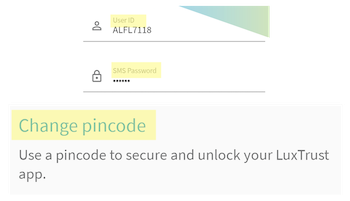
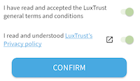
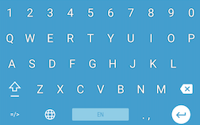
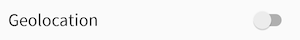
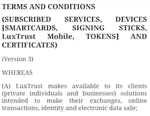
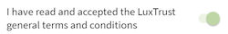
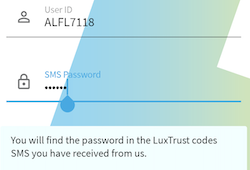
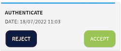
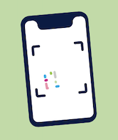

Introduction
Ce rapport accompagne le relevé d’audit effectué sur l’application « LuxTrust ».
L’évaluation pour les applications mobiles consiste à vérifier l’ensemble des critères de la norme européenne d’accessibilité pour les produits et services EN 301 549 (v3.2.1). La méthodologie de test se base sur le Référentiel d’évaluation de l’accessibilité des applications mobiles (RAAM 1).
L’audit a été réalisé à l’aide des technologies d’assistance disponibles et autorisées par des tests de restitution avec le lecteur d’écran du système d’exploitation (TalkBack sur Android), ainsi que des tests d’adaptation des contenus en fonction des paramètres d’affichage utilisateurs.
- Version Android lors de l’audit : 12
Échantillon
L’audit a été réalisé sur la version de l’application suivante :
- Android : 3.7.0
L’audit a porté sur les écrans et parcours suivants :
| Nº écran | Titre de l’écran |
|---|---|
| E01 | Activation |
| E02 | Home |
| E03 | Authentication |
| E04 | My certificate |
| E05 | Security |
| E06 | Report |
Conditions de réalisation de l'audit
Certaines technologies d'assistance ne sont pas autorisées sur l'application pour des raisons de sécurité. Ces configurations particulières empêchent donc de nombreux utilisateurs de pouvoir consulter l'application, nous pouvons noter par exemple les utilisateurs de contrôle vocal, de contacteurs/pointeurs externes, d'oculométrie, etc.
Il est important de savoir qu'en l'état et en raison de l'interdiction d'accès à l'application par les services d'accessibilité, l'application ne pourra jamais être conforme et réellement accessible.
Le périmètre de l'audit a été réduit en fonction de ces contraintes et se compose comme suit :
- Analyse de restitutions avec le lecteur d'écran natif Android (Talkback)
- Analyse des contrastes à partir des captures d'écran fournies par l'éditeur.
Accessibilité des parcours audités
L’application présente un niveau général d’accessibilité faible.
Le niveau moyen de conformité au RAAM relevé atteint 40 % de conformité sur l’ensemble des écrans audités, avec 43,48 % de conformité au niveau simple A (A) et 28,57 % de conformité au niveau double A (AA).
L’application est non conforme.
Conformité RAAM de l’application
| Conforme | Non conforme | |
|---|---|---|
| A | 43,48% | 56,52% |
| AA (légal) | 40,00% | 60,00% |
Note sur le calcul de conformité
La conformité globale (Tableau « Conformité RAAM 1 ») est calculée de la manière suivante : C / (C+NC). C est le nombre de critères conformes et NC le nombre de critères non conformes.
C’est ce nombre qui constitue la référence légale. Il représente le taux de conformité de l’échantillon.
Il est normal que le taux de conformité global diffère sensiblement du taux de conformité par écran. En effet, un critère NC (non conforme) sur un écran rend le critère non conforme sur l’ensemble de l’échantillon.
Pour qu’une application soit conforme (100 % des critères applicables sont conformes au niveau AA), il est nécessaire que le taux de conformité par écran équivaille à 100 %.
Conformité pour chaque niveau
| Conforme | Non conforme | |
|---|---|---|
| A | 43,48% | 56,52% |
| AA | 28,57% | 71,43% |
Moyenne par écrans
| Nº écran | Titre d’écran | %C |
|---|---|---|
| E01 | Activation | 48,00% |
| E02 | Home | 62,50% |
| E03 | Authentication | 78,57% |
| E04 | My Certificate | 64,29% |
| E05 | Security | 60,00% |
| E06 | Report | 76,92% |
Moyenne par thématiques
| Thématiques | C |
|---|---|
| Éléments graphiques | 0,00% |
| Couleurs | 33,33% |
| Multimédia | NA |
| Tableaux | NA |
| Composants interactifs | 25,00% |
| Éléments obligatoires | 50,00% |
| Structuration | 0,00% |
| Présentation | 75,00% |
| Formulaires | 50,00% |
| Navigation | 0% |
| Consultation | 33,33% |
| Documentation et fonctionnalités d’accessibilité | NA |
| Services d’assistance | NA |
| Outils d'édition | NA |
| Communication en temps réel | NA |
Impacts utilisateurs
En plus des personnes totalement exclues de l'application pour des raisons de sécurité (raisons citées plus haut), les principales personnes impactées sont les personnes aveugles et les utilisateurs de lecteurs d'écran. Les problèmes liés aux composants interactifs et les formulaires rendent parfois difficile l’utilisation de l’application par ces utilisateurs.
Contenus dérogés
La dérogation est un moyen d’exclure du champ d’application du référentiel des contenus particuliers. Les cas de dérogations sont très encadrés, vous en trouverez le détail dans le guide des dérogations.
Les contenus suivants n’entrent pas dans le calcul de la conformité ni dans le périmètre des éléments à rendre accessible, ils sont dérogés :
- Aucun contenu n'est dérogé
Droit à la compensation
Les dérogations émises notamment pour charge disproportionnée demandent en contrepartie la mise en place d’un moyen de compensation pour les utilisateurs. Pour les documents bureautiques par exemple, vous devez fournir un moyen à l’utilisateur de demander une version accessible d’un document s’il en a besoin. Cela peut être un mail ou un formulaire de contact.
Note sur le relevé des non-conformités
Ne sont cités dans ce rapport que quelques exemples issus du relevé des non-conformités.
De plus, toutes les occurrences d’une non-conformité ne sont pas listées dans le relevé. Par exemple : pour les contrastes de couleur insuffisants, le relevé mentionne quelques occurrences, mais ne les cite pas toutes.
Avis
L'application propose une structure robuste et reste donc relativement utilisable pour les utilisateurs de lecteurs d'écran. En revanche, le processus complet d'activation du certificat est inaccessible en raison de nombreux points bloquants, empêchant la grande majorité des utilisateurs de valider cette démarche.
Les non-conformités les plus bloquantes pour les utilisateurs concernent :
- L'absence de rôle et/ou d'intitulé sur les composants interactifs
- Des composants spécifiques inatteignables (le clavier de saisie des mots de passe, les champs de saisie, etc.)
- Les formulaires du processus d'activation (absence d'étiquettes, d'indication du format attendu et de message d'erreur)
Ce sont donc ces points qui devront nécessiter une attention toute particulière et qui demanderont le plus d’efforts.
Annexe technique
Éléments graphiques
Recommandation
Identifier les éléments graphiques de décoration pour qu’ils soient ignorés par les technologies d’assistance. Donner à chaque élément graphique porteur d’information une alternative textuelle pertinente et une description détaillée si nécessaire. Remplacer les éléments graphiques textes par du texte stylé lorsque c’est possible.
Éléments graphiques de décoration
Un élément graphique de décoration ne contient aucune information indispensable à la compréhension du contenu auquel il est associé. Il est important que ces éléments graphiques ne soient pas restitués aux utilisateurs de technologies d’assistance, par exemple les aveugles avec un lecteur d’écran.
Constats dans l’application
On note plusieurs images de décoration qui ne sont pas ignorées, par exemple l'icône représentant une coche verte sur l'écran de visualisation du certificat.
Éléments graphiques porteurs d’information
Un élément graphique est considéré comme porteur d’information lorsqu’il contient une information indispensable à la compréhension du contenu auquel il est associé. Il est indispensable que ces informations soient restituées, par exemple aux utilisateurs aveugles qui se servent d'un lecteur d’écran.
Constats dans l’application
Le logo "LuxTrust" présent sur de nombreux écrans de l'application est atteignable par les technologies d'assistance mais n'a pas d'alternative renseignée.
Couleurs
Recommandation
Ne pas donner l’information uniquement par la couleur et utiliser des contrastes de couleurs suffisamment élevés pour les textes et les composants d’interface et les éléments graphiques.
Contrastes des textes
Plusieurs couleurs présentent un rapport de contraste insuffisant, ce qui peut poser problème aux grands malvoyants et aux déficients visuels qui ont des difficultés à percevoir les couleurs ou les contrastes.
La norme distingue plusieurs tailles de textes à évaluer, chaque taille relevant d’un seuil de contraste. Ces tailles sont évaluées en pixel ou en point. Plus un texte est grand (supérieur à 18,5px avec effet de graisse ou 24px sans effet de graisse) moins le rapport requis est élevé (3:1).
Compte tenu de la difficulté à évaluer les tailles de polices sur mobile, tous les textes devraient être considérés en taille normale sauf pour des textes significativement très grands.
Les textes des applications doivent tous avoir un rapport de contraste de 4.5:1.
Vous pouvez foncer les couleurs pour obtenir le rapport de contraste exigé.
Constats dans l’application
On constate de nombreux textes avec un contraste trop faible, par exemple, les étiquettes des champs "User ID" et "Mot de passe SMS" ou le texte du bouton de changement du code PIN.
Contraste des composants d’interface
Les composants d’interface, les illustrations porteuses d’information ou encore les mises en couleurs porteuses d’information doivent être suffisamment contrastés pour être perçus par les utilisateurs ayant des troubles de perception des couleurs. Par exemple, une icône porteuse d’information devra avoir un rapport de contraste avec la couleur de fond de 3. De même, pour un champ de saisie de formulaire, dont la zone active est matérialisée par sa bordure, alors la couleur de cette bordure devra avoir un rapport de contraste de 3 avec la couleur de fond de l’écran.
Constats dans l’application
On note plusieurs composants qui ne sont pas suffisamment contrastés, par exemple sur l'écran d'activation du certificat, les boutons type switch (à l'état activés) et les boutons de changement d'étape ("Suivant", "Confirmer", etc.).
Composants interactifs
Recommandation :
Donner si nécessaire à chaque composant interactif une alternative pertinente. Rendre possible le contrôle de chaque composant interactif au moins par le clavier et la souris et s’assurer de leur compatibilité avec les technologies d’assistance. Identifier les messages de statut lorsque c’est nécessaire.
Rôle inapproprié ou non défini
Pour les aveugles et les grands malvoyants qui utilisent un lecteur d’écran, ce manque de distinction claire sur la nature des composants interactifs peut poser de graves problèmes.
En effet, le rôle du composant est annoncé par le lecteur d’écran, ce qui fournit une information contextuelle importante pour l’utilisateur qui peut déduire certaines actions possibles et s’attendre à certains événements.
Enfin, chaque composant interactif doit avoir un nom accessible défini par l’intermédiaire d’un texte (visible ou non) accessible aux technologies d’assistance).
Constats dans l’application
On note plusieurs composants interactifs sans rôle défini, par exemple, sur l'écran "Comment activer ?", les boutons permettant de plier ou déplier les contenus et les composants (liens) "Téléphone" et "E-mail".
Intitulé absent ou non pertinent
Pour chaque composant interactif, deux éléments sont à prendre en compte :
- Le nom accessible doit être pertinent ;
- Le nom visible doit être contenu dans le nom accessible.
Le nom accessible est le nom effectivement restitué par les technologies d’assistance comme le lecteur d’écran. Ce nom accessible est différent du nom visible dans les cas où l’application emploie certaines propriétés (comme les propriétés de nommage d’accessibilité des plateformes, dont le contenu n’est pas visible, mais est restitué par les lecteurs d’écran).
Constats dans l’application
Sur l'ensemble de l'application par exemple, les boutons d'information (i) n'ont pas d'intitulé.
Lecteur d’écran
Les composants interactifs doivent tous être accessibles au lecteur d’écran. Sous Android il s’agit de TalkBack et sous iOS, de VoiceOver.
Certains composants des interfaces de l’application ne sont pas atteignables avec le lecteur d’écran.
Constats dans l’application
Le clavier visuel proposé pour saisir certaines données (mot de passe par exemple) n'est pas atteignable par technologies d'assistance.
Changement de contexte
Un changement de contexte est une situation où un utilisateur ne peut pas anticiper le fonctionnement d’une fonctionnalité lorsque celle-ci ouvre une nouvelle application, valide un formulaire ou ajoute ou modifie du contenu dans l’écran par exemple.
Cela concerne plus spécifiquement les fonctionnalités qui se lancent sans que l’utilisateur puisse les anticiper comme, par exemple, la soumission automatique d’un champ de formulaire sur la sélection d’un item ou lorsque l’utilisateur quitte un champ de saisie.
Constats dans l’application
Sur l'écran de sécurité, l'activation du bouton switch "Geolocalisation" déclenche un changement de contexte (ouverture des paramètres) sans que l'utilisateur ne soit prévenu.
Structuration de l’information
Recommandation
Utiliser des titres, des listes.
Titres
Le titrage des contenus est une étape importante dans la structuration de ces contenus. Cela répond à deux besoins :
- identifier rapidement un contenu recherché ;
- naviguer rapidement dans le contenu en se déplaçant de titre en titre.
Un titrage correct fournit à l’utilisateur d’un lecteur d’écran un plan du document et lui permet de naviguer de titre en titre pour se déplacer plus rapidement dans le contenu.
Constats dans l’application
Par exemple, sur l'écran "Activation" (dans l'écran des conditions générales de vente), on note la présence de textes présentés visuellement comme des titres qui ne sont pas structurés comme des titres dans le code source.
Présentation de l’information
Recommandation
Vérifier la prise en charge des paramètres de taille de police et l’effet de l’agrandissement des tailles des caractères sur la lisibilité. S’assurer que les composants sont correctement identifiables. S’assurer que l’information n’est pas donnée uniquement par la forme ou la position d’un élément.
Contenus visibles non accessibles
Certains textes des écrans visibles ne sont pas accessibles aux technologies d’assistance.
Constats dans l’application
On note plusieurs éléments visibles qui ne sont pas atteignables par les technologies d'assistance et donc pas restitués. Par exemple, sur l'écran d'accueil, lorsqu'une nouvelle transaction est disponible et à étudier, le texte "Une nouvelle transaction est en attente d'approbation" n'est pas restitué.
Formulaires
Recommandation :
Associer pour chaque formulaire chacun de ses champs à son étiquette, grouper les champs dans des blocs d’informations de même nature, donner à chaque bouton un intitulé explicite. Vérifier la présence d’aide à la saisie, s’assurer que le contrôle de saisie est accessible et que l’utilisateur peut contrôler les données à caractère financier, juridique ou personnel.
Étiquettes et champs
Les champs de formulaires doivent tous posséder des étiquettes correctement reliées.
Une étiquette de champ est un texte situé à proximité du champ de formulaire qui permet de connaître la nature, le type ou le format des informations attendues.
De cette manière, lorsqu’un utilisateur entre dans le champ de saisie avec un lecteur d’écran, le lecteur d’écran lit le contenu de l’étiquette. L’utilisateur comprend alors ce qu’il doit saisir.
Sans cela, même si une étiquette est présente visuellement, l’utilisateur entendra « champ de saisie vide » en entrant dans le champ et ne saura donc pas quoi saisir.
Constats dans l’application
Plusieurs champs du processus d'activation n'ont pas d'étiquette accessible, par exemple le champ "Saisir le "Video ID" reçu par SMS" (écran commencer l'identification) et le bouton type switch "J'ai lu et compris [...]".
Contrôle de saisie et aide à la saisie
Tous les champs obligatoires doivent être identifiés préalablement à toute validation de l’utilisateur.
Pour les champs qui attendent un format de saisie particulier pour être validés, ce format doit être spécifié à l’utilisateur par un passage de texte visible à proximité du champ. De plus, si l’utilisateur commet une erreur sur ce champ, alors le message d’erreur doit présenter un exemple réel de saisie.
Enfin, les messages d’erreur de saisie des champs de formulaire doivent être liés correctement aux champs en erreur.
Constats dans l’application
Le processus d'activation du certificat propose un formulaire par étape qui contient des erreurs : absence d'indication des champs obligatoires (champs "User ID" et "Mot de passe SMS"), absence d'indication du format attendu (champ "User ID") et l'absence de restitution aux technologies d'assistance des erreurs de saisie du code pin (message "Code PIN faible").
De plus, lorsqu'une erreur est relevée, le focus doit être repositionné sur un élément pertinent, par exemple, le message d'erreur ou le 1er champ en erreur afin de faciliter la navigation pour les utilisateurs.
Navigation
Recommandation :
S’assurer que l’ordre de tabulation est cohérent et que l’écran ne comporte pas de piège au clavier. S’assurer que les raccourcis clavier qui utilisent une seule touche sont contrôlables par l’utilisateur.
Ordre de restitution
L’ordre d’accès aux composants d’interface par le lecteur d’écran peut être différent de l’ordre de navigation à l’aide d’un clavier externe (sans utilisation d’un clavier), bien que parfois, les deux partagent les mêmes comportements.
Constats dans l’application
Lorsqu'un utilisateur reçoit une notification pour authentifier une demande, le focus devrait être positionné sur le 1er élément de l'écran, par exemple, le logo "LuxTrust". De même, lorsqu'un utilisateur active le certificat en utilisant le bouton "Accepter", le focus devrait être repositionné sur le texte "Certificate details".
Consultation
Recommandation
Vérifier que l’utilisateur a le contrôle des procédés de rafraîchissement, des changements brusques de luminosité et des contenus en mouvement ou clignotants. Ne pas faire dépendre l’accomplissement d’une tâche d’une limite de temps sauf si elle est essentielle et s’assurer que les données saisies sont récupérées après une interruption de session authentifiée. Proposer des versions accessibles ou rendre accessibles les documents en téléchargement. S’assurer que la consultation n’est pas dépendante de l’orientation de l’écran. Toujours proposer un geste simple en alternative d’un geste complexe permettant de réaliser une action.
Contenus en mouvement ou clignotants
Les contenus en mouvement peuvent être problématiques pour les utilisateurs avec des difficultés de lecture, en effet un contenu qui défile trop rapidement empêche d’accéder de fait à l’information. De plus, pour les personnes avec un déficit de l’attention, le mouvement les empêche de lire le reste de l’écran.
Il faut alors permettre aux utilisateurs d’arrêter et de redémarrer le contenu en mouvement , ou d’afficher tout le contenu sans le mouvement ou de masquer le contenu en mouvement et de le réafficher.
Constats dans l’application
Sur l'écran d'accueil, l'animation de l'image de présentation du scanner de QR Code ne peut pas être arrêtée.
Consultation des contenus indépendante de l’orientation
Certaines personnes handicapées motrices peuvent utiliser des périphériques dont elles ne peuvent pas contrôler l’orientation. Par exemple les personnes qui utilisent des contacteurs pour interagir avec le périphérique de consultation. D’autres, comme les personnes déficientes visuelles peuvent avoir besoin de forcer un mode d’affichage (paysage par exemple) pour pouvoir bénéficier des fonctionnalités d’agrandissement des caractères.
Il est donc nécessaire que les applications :
- Ne bloquent pas l’orientation sur un mode portrait ou paysage ;
- S’assurent que les contenus sont consultables dans les deux modes d’affichage.
Constats dans l’application
Aucun écran ne peut être consulté en mode paysage.